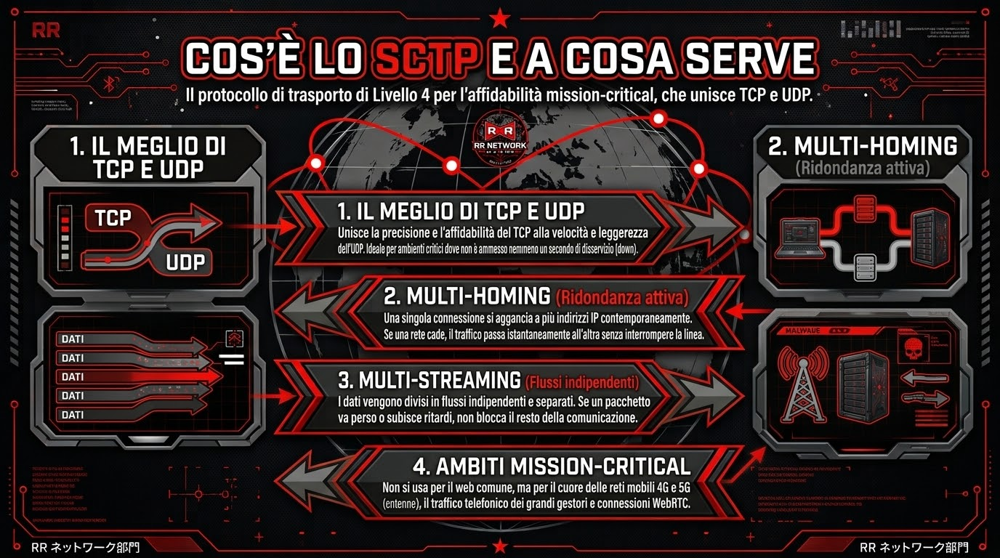
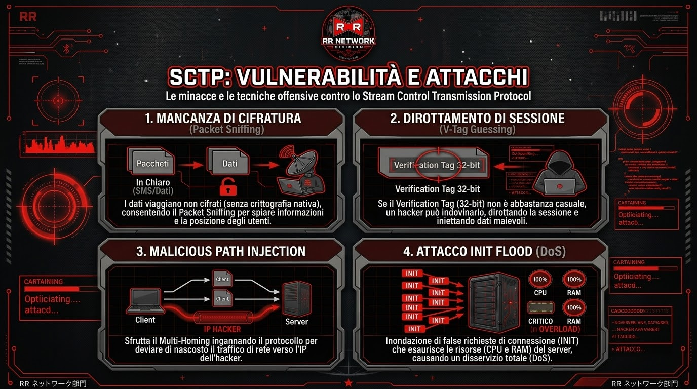
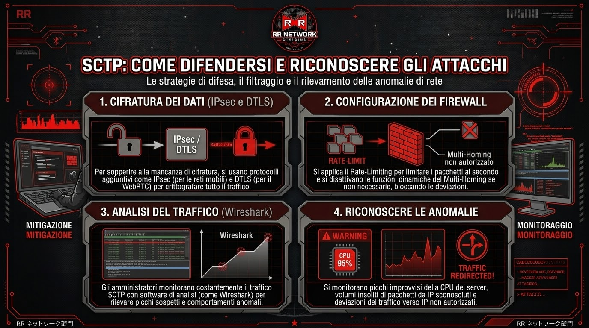
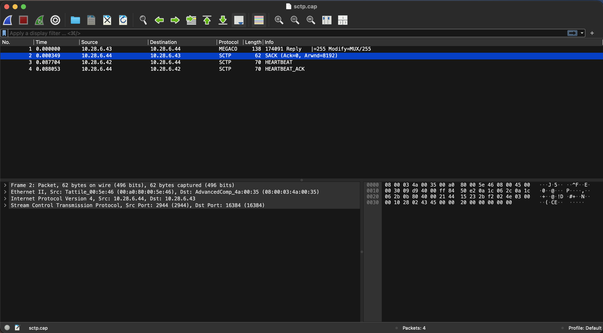

Lo Stream Control Transmission Protocol (SCTP) è un protocollo di trasporto di Livello 4 nato per unire la precisione del TCP (che vi ha già presentato il nostro Gerardo) e la leggerezza dell'UDP. Le sue due vere superpotenze sono il Multi-Homing e il Multi-Streaming. In pratica, una singola connessione può agganciarsi a più indirizzi IP contemporaneamente: se una rete cade, il traffico passa subito all'altra senza far cadere la linea. Inoltre, i dati vengono divisi in flussi indipendenti, quindi se un pacchetto va perso non blocca tutto il resto della comunicazione.
Proprio per questa sua estrema affidabilità, lo SCTP non si usa per la normale navigazione web, ma in ambienti mission-critical dove non è ammesso un singolo secondo di down. Parliamo del cuore delle reti mobili 4G e 5G per il controllo delle antenne, del traffico telefonico dei grandi gestori e delle connessioni WebRTC per scambi di dati in tempo reale.

Tuttavia, anche questo protocollo ha il suo tallone d'Achille. Di base, non ha una cifratura nativa: i dati viaggiano in chiaro (proprio come gli SMS tradizionali), rendendo facile per un hacker intercettarli tramite Packet Sniffing per spiare, ad esempio, la posizione degli utenti mobili. Inoltre, ogni connessione usa un codice a 32-bit (Verification Tag); se questo codice non è generato in modo abbastanza casuale, un attaccante può indovinarlo, dirottare la connessione e farla cadere o iniettare dati malevoli.
Le sue stesse funzionalità possono essere usate contro di lui. Il Multi-Homing, ad esempio, può essere ingannato per deviare di nascosto il traffico verso l'IP dell'hacker (tecnica nota come Malicious Path Injection). Oppure, sfruttando la fase iniziale di connessione, un malintenzionato può inondare il server di false richieste (attacco INIT Flood) fino a esaurire completamente la CPU e la RAM della macchina bersaglio, causando un disservizio totale.

Per mettere in sicurezza un'infrastruttura SCTP, è fondamentale "tappare" le sue mancanze strutturali. Nelle reti mobili è d'obbligo usare protocolli aggiuntivi come IPsec per cifrare il traffico, mentre per il WebRTC si usa il DTLS. Bisogna poi configurare i firewall per limitare il numero di pacchetti ricevibili al secondo (Rate-Limiting) e disattivare le funzioni dinamiche del Multi-Homing se non sono strettamente necessarie, bloccando alla radice i tentativi di deviazione del traffico.
Analisi Bonus: Per capire se un attacco è in corso, gli amministratori di rete si affidano a software di analisi del traffico come Wireshark. Se i grafici mostrano picchi improvvisi e ingiustificati nell'uso della CPU dei server, volumi anomali di pacchetti provenienti da IP sconosciuti, o se si nota che il traffico SCTP sta venendo improvvisamente deviato verso indirizzi non autorizzati, significa che il sistema è sotto attacco e bisogna intervenire tempestivamente.

L'analisi del protocollo SCTP (Stream Control Transmission Protocol) mostra meccanismi avanzati di trasporto orientati ai messaggi. Nella cattura si nota l'uso del pacchetto SACK per confermare la corretta ricezione dei dati e aggiornare la finestra di ricezione. Inoltre, lo scambio continuo di pacchetti HEARTBEAT e HEARTBEAT_ACK dimostra come il protocollo monitori costantemente l'affidabilità e l'attività del collegamento tra i nodi.
